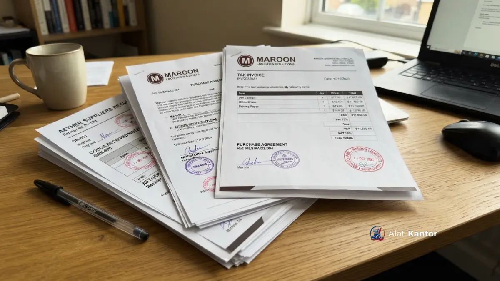

Apa Saja Syarat Kuitansi Bermaterei agar Dianggap Sah?
Kuitansi bermaterei dianggap sah apabila memuat identitas pihak yang bertransaksi, nominal transaksi yang jelas, tanda tangan di atas materai dengan nilai yang sesuai, serta tanggal transaksi yang akurat.
Beberapa elemen yang umumnya wajib ada dalam kuitansi bermaterei resmi:
- Identitas lengkap: Mencantumkan penerima dan pemberi pembayaran secara terperinci, termasuk nama instansi atau perusahaan.
- Nominal transaksi: Ditulis secara jelas dalam bentuk angka dan huruf untuk menghindari ambiguitas atau potensi manipulasi data.
- Pembubuhan materai: Penggunaan materai dengan nilai yang sesuai ketentuan berlaku, ditempel pada posisi yang benar dan ditandatangani melintasi materai tersebut.
- Tanggal dan tempat transaksi: Menjadi acuan waktu pencatatan laporan keuangan instansi secara resmi.
- Keterangan barang atau jasa: Menyebutkan objek transaksi agar kuitansi dapat menjadi bukti pendukung yang jelas saat proses audit.
Berapa Nilai Materai yang Dibutuhkan untuk Transaksi Pengadaan?
Nilai materai untuk transaksi pengadaan mengikuti ketentuan bea meterai berdasarkan nominal dokumen, sehingga instansi disarankan mengonfirmasi nominal materai terbaru kepada vendor atau petugas pajak sebelum transaksi.
Karena ketentuan bea meterai dapat mengalami penyesuaian dari waktu ke waktu, cara paling aman untuk memastikan kepatuhan adalah mengonfirmasi langsung nilai materai yang berlaku saat transaksi dilakukan, alih-alih mengandalkan asumsi nominal lama. Vendor yang berpengalaman menangani transaksi B2B/B2G biasanya sudah terbiasa menyesuaikan nilai materai pada setiap kuitansi yang diterbitkan.

Bagaimana Proses Pengurusan Kuitansi Bermaterei untuk Instansi di Jakarta?
Proses pengurusan kuitansi bermaterei untuk instansi di Jakarta umumnya mengikuti alur administrasi standar, namun perlu memperhitungkan volume transaksi yang tinggi dan kebutuhan koordinasi dengan banyak unit kerja instansi.
Instansi di Jakarta, baik kementerian, lembaga, maupun perusahaan swasta berskala besar, umumnya memiliki alur verifikasi dokumen berlapis sebelum kuitansi bermaterei disetujui sebagai bukti pembayaran resmi. Kecepatan proses pengiriman dokumen fisik dari vendor ke instansi menjadi faktor penting, sehingga vendor yang memiliki jaringan pengiriman dan layanan konsultasi dokumen di Jakarta dapat membantu mempercepat proses administrasi.
Bagaimana Proses Pengurusan Kuitansi Bermaterei untuk Instansi di Surabaya?
Proses pengurusan kuitansi bermaterei untuk instansi di Surabaya umumnya mempertimbangkan kebutuhan koordinasi dengan instansi pemerintah daerah maupun perusahaan swasta yang tersebar di kawasan industri kota tersebut.
Sebagai salah satu pusat ekonomi di Jawa Timur, Surabaya memiliki banyak instansi dan perusahaan yang melakukan transaksi pengadaan rutin, sehingga kelengkapan kuitansi bermaterei menjadi bagian penting dari siklus pelaporan keuangan bulanan maupun tahunan. Vendor yang memahami kebutuhan dokumen instansi di Surabaya dapat membantu memastikan format kuitansi sesuai dengan standar pelaporan yang berlaku di wilayah tersebut.
Bagaimana Proses Pengurusan Kuitansi Bermaterei untuk Instansi di Malang?
Proses pengurusan kuitansi bermaterei untuk instansi di Malang umumnya berjalan lebih cepat karena jarak koordinasi yang relatif dekat dengan basis operasional vendor pengadaan yang berpusat di wilayah tersebut.
Malang menjadi salah satu kota dengan konsentrasi sekolah, kampus, dan instansi pemerintah daerah yang aktif melakukan pengadaan barang secara berkala. Kedekatan lokasi vendor dengan instansi di Malang Raya memungkinkan proses konsultasi dokumen dan penerbitan kuitansi bermaterei dilakukan lebih responsif dibanding wilayah yang lebih jauh.
Bagaimana Proses Pengurusan Kuitansi Bermaterei untuk Instansi di Denpasar?
Proses pengurusan kuitansi bermaterei untuk instansi di Denpasar perlu memperhitungkan waktu pengiriman dokumen antarpulau serta kebutuhan koordinasi dengan instansi pemerintah maupun sektor swasta di Bali.
Sebagai wilayah dengan karakteristik geografis kepulauan, instansi di Denpasar umumnya membutuhkan perencanaan waktu yang lebih matang dalam proses pengadaan, termasuk untuk penerbitan dan pengiriman kuitansi bermaterei. Vendor yang memiliki pengalaman melayani wilayah luar Jawa dapat membantu memastikan dokumen tetap sampai tepat waktu sesuai kebutuhan pelaporan instansi.
Bagaimana Proses Pengurusan Kuitansi Bermaterei untuk Instansi di Makassar?
Proses pengurusan kuitansi bermaterei untuk instansi di Makassar umumnya melibatkan koordinasi jarak jauh dengan vendor pusat, sehingga kejelasan format dokumen sejak awal transaksi menjadi krusial untuk menghindari revisi berulang.
Sebagai pusat ekonomi di kawasan Indonesia Timur, Makassar memiliki banyak instansi pemerintah dan perusahaan yang membutuhkan dokumen pengadaan yang rapi dan sesuai standar audit. Komunikasi kebutuhan spesifik dokumen sejak tahap awal transaksi dapat membantu mempercepat proses penerbitan kuitansi bermaterei untuk instansi di Makassar.
Untuk memahami konteks lebih luas mengenai kelengkapan dokumen dalam satu paket pengadaan, silakan baca artikel Panduan A-Z Merancang Paket Pengadaan Kantor Baru Sejak Hari Pertama. Bagi instansi yang sekaligus membutuhkan pasokan ATK dalam jumlah besar, artikel mengenai Grosir ATK Malang Raya: Pengiriman Cepat dan Harga Grosir Resmi dapat menjadi referensi tambahan.